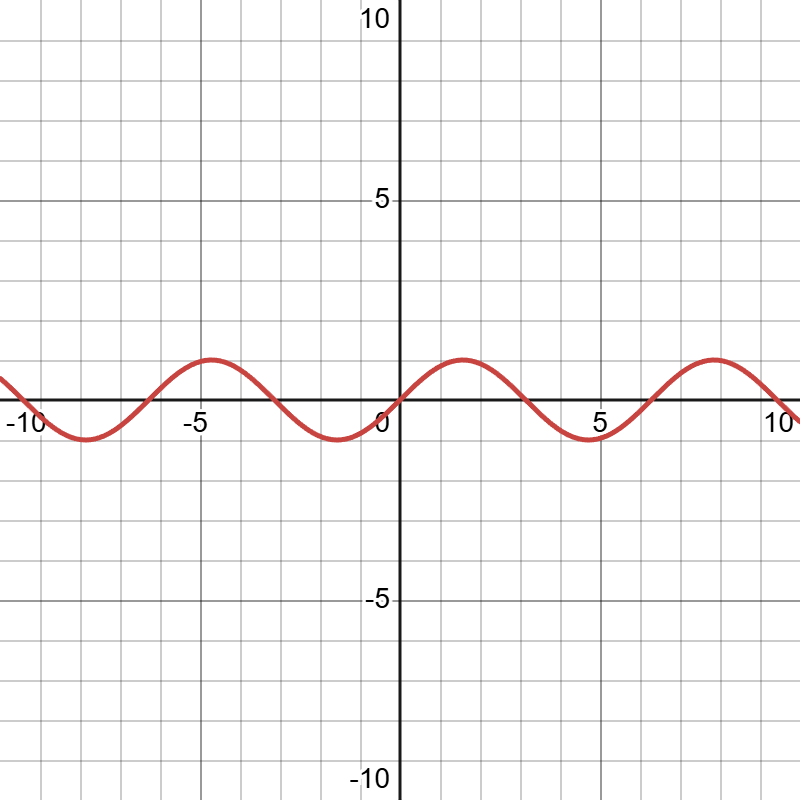

MTH 251H Function Project f(x)=x - sin(x)
by Osvaldo Hernandez
Function family
Function is a linear minus trigonometric, or it could also be refered as a sinusodial function with the parent function being Sin(x)
Characteristics
Domain: All real numbers
Range: All real numbers
y-int: 0
x-int: 0
Asymptotes: No Asymptotes
Equation of Tangent line
x = 1: y - (1 - sin(1)) = (1 - cos(x)) (x - 1)
≈ y - 0.1585 = (1 - cos(x)) (x - 1)
x = 2: y - (2 - sin(2)) = (1 - cos(x))(x - 2)
≈ y - 1.0907 = (1 - cos(x)) (x - 1)
Derivatives
First Derivative: f ' (x) = 1 - cos(x)
f ' (x) tells us that the function is increasing the whole time, bneign (-infinity, infinity)
Second Derivative: f ' ' (x) = sin(x)
f ' ' (x) tells us that the concavity is at an interval, every 2πk (k being a number)
Limit


Interesting features
1. After the second derivative, the derivatives become derivatives of eachother since f '(x) = sin(x) is cos(x), and f '(x) = cos(x) is -sin(x)
2. The derivative of the function is periodic meaning that the function will repeat it's y values at certain values. For sin(x), every 2π will result in the same values.
Sources
desmos.com
plotly.com